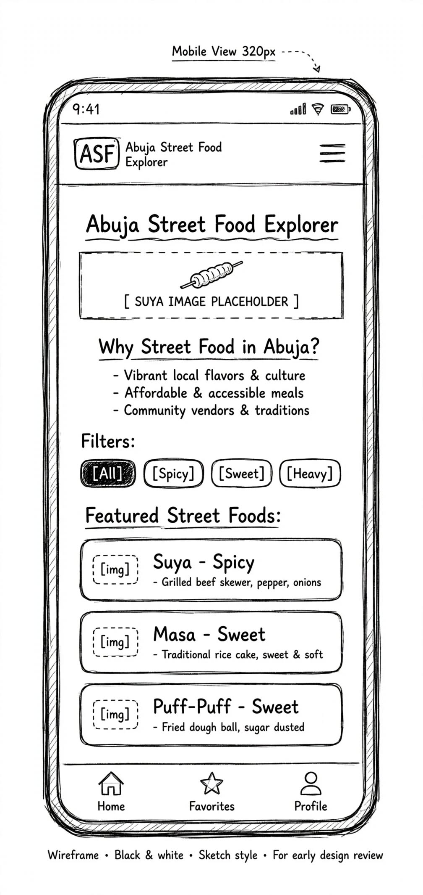
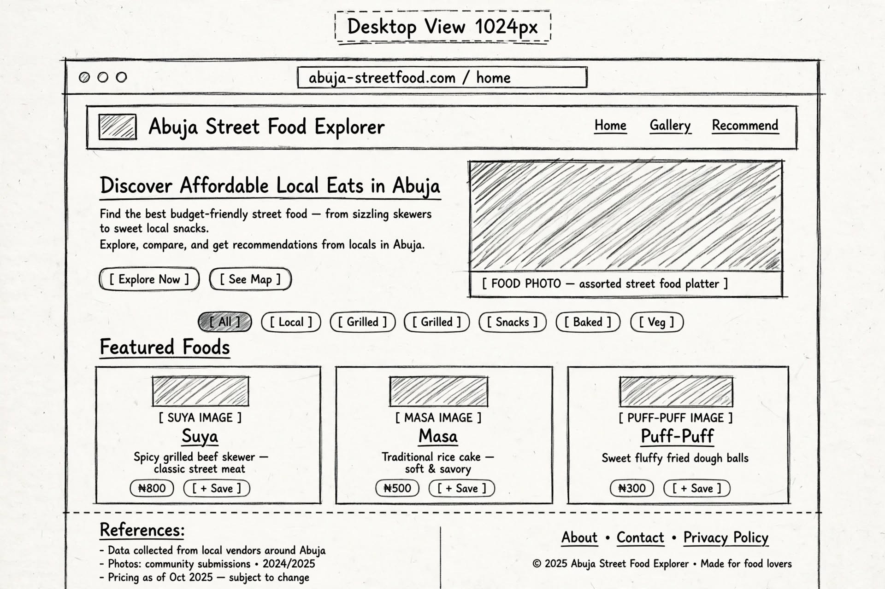

Site Name
Abuja Street Food Explorer
The name clearly identifies the website as a guide to discovering affordable street food in Abuja.
Site Purpose
My website will be a three-page informational guide for students and visitors in Abuja who want to discover affordable local food. The Home page will introduce Abuja's street food culture with featured foods and images. The second page will be a Food Gallery featuring 6–8 local foods such as Suya, Masa, Kilishi, Abacha, and Puff-Puff, with information about their price ranges, ingredients, and where they can be found in Abuja. JavaScript filter buttons will allow users to explore the foods by category. The third page will include a Recommendation Form where users can suggest a food or food spot, as well as a favorites feature that uses localStorage to save favorite foods. A references section will be included in the footer.
Scenarios
- Where can I find affordable suya in Abuja?
- What Nigerian street foods can I try with a small budget?
- What ingredients are commonly used in Abuja street foods?
- Which local foods should I try if I am new to Abuja?
Color Schema
Deep Navy
#172554
Used for headings, header areas, and strong visual elements.
Purple
#6D28D9
Used for accents, buttons, borders, and highlighted elements.
Warm Cream
#FFF7ED
Used as the main page background.
White
#FFFFFF
Used for cards and areas that need contrast.
Typography
Poppins
Used for the main heading, section headings, navigation, and other important visual text.
Roboto
Used for body paragraphs, lists, descriptions, and general reading content.
Wireframes


Reason for Choosing This Topic
I chose this subject because I live in Abuja and enjoy our local food culture. I noticed that there is no simple, mobile-friendly website that organizes this type of information for students and newcomers. This is a topic I enjoy and can create original content and optimized images for. It will also give me opportunities to practice responsive design, JavaScript, forms, DOM manipulation, and localStorage.